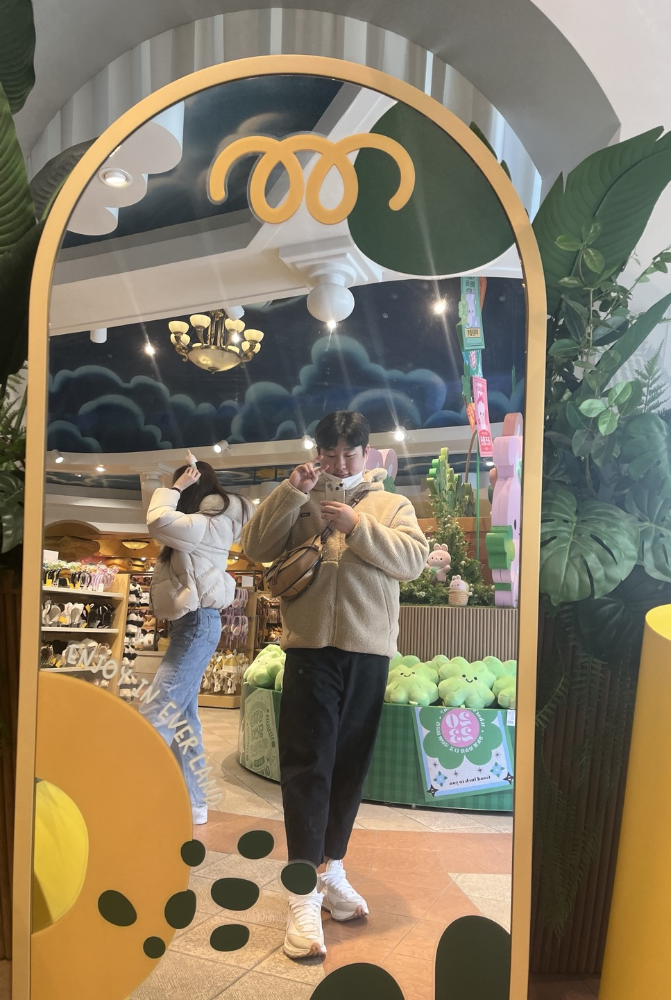

인간 김유신

유신이는 중학교 시절 필리핀으로 유학을 떠나며 모험의 시작을 경험했습니다. 처음에는 언어와 문화적인 차이로 적응하는 데 어려움을 겪었지만, 끈질긴 노력과 호기심으로 그 어려움을 극복했어요. 그리고 고등학교 시절 미국으로 이사간 유신은 또 다른 도전에 직면했죠. 언어와 문화의 큰 차이로 처음에는 힘들었지만, 그는 미국에서의 삶을 기쁘게 받아들이기 시작했습니다. 그 후 군대에 입대하며 유신이는 군인으로서의 역할을 수행하며 훈련과 업무를 수행했습니다. 군대에서도 그의 인내와 헌신적인 태도가 돋보였고, 그 경험은 그의 성장에 큰 도움이 되었습니다. 군대에서 배운 리더십과 협동심은 그가 미래에도 성공적으로 빛날 것이라고 생각해요. 이제 유신이는 문화적, 인류적 적응 과정을 거쳐 미래를 밝게 바라보는 젊은이로 자리 잡았습니다. 그의 인내와 열정, 그리고 다양한 경험들은 그를 독특하게 만들었고, 그의 미래는 흥미로움으로 가득하다고 확신합니다.